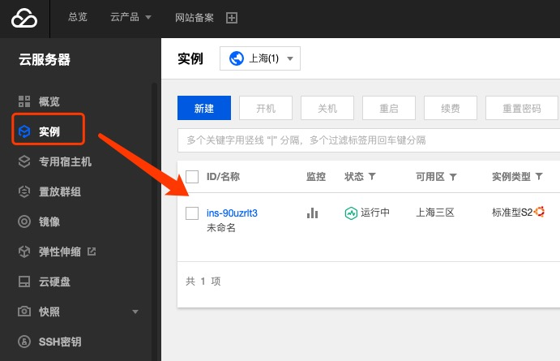
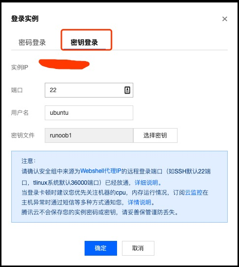

11. 云服务器原文↗
云服务器(Elastic Compute Service, ECS)是一种简单高效、安全可靠、处理能力可弹性伸缩的计算服务。
云服务器管理方式比物理服务器更简单高效，我们无需提前购买昂贵的硬件，即可迅速创建或删除云服务器，云服务器费用一般在几十到几百不等，可以根据我们的需求配置。
目前市场上的云服务器很多，这里主要介绍以下几家：
更多云服务器参考： https://www.jyshare.com/cloud-server/
注意：很多云服务器给新用户提供的优惠力度是最大，基本上都是 1～2 折，建议新注册的用户购买。
阿里云
阿里云新用户购买折扣比较大，云服务器2核2G 3M固定带宽原价 1507.56/年, 现低至 99元/年，另外可以按 99元 续费一年，也就是 198元 用两年点击下面图片查看详情。

腾讯云
腾讯云秒杀活动已开始，以下几款性价比非常高，有几款是需要抢购的，大家看好时间基本能拿到。
- 2核2G4M云服务器 新老同享 99元/年，续费同价。
每个时间点都有不同的配置跟价格，具体信息，可以点击下面的图片（https://url.cn/zpx9ruoW）。
腾讯云服务器使用
本章节以腾讯云服务器为例。
1、首先点击下图购买（更多服务器的配置信息见下文）：

2、登陆腾讯云控制台，查看已购买的服务器：

3、在使用腾讯云服务器前，我们需要先创建一个 SSH 密钥，点击左侧的 SSH 密钥 （使用密钥登录比密码更安全）：

输入密钥名称，然后点击确定，就会自动生成一个密钥，密钥会自动下载到本地，请保存好下载的密钥，密钥文件名就是你输入的密钥名称。
4、接着我们勾选已经创建的密钥，点击 绑定/解绑实例 按钮，弹窗中会出现我们的 ECS 服务器，将其绑定到这个密钥即可：

5、返回实例列表，点击实例右侧的 登录 按钮，弹窗中点击立即登录，这是会弹出一个新的浏览器窗口，我们选择密钥登录，密钥文件就是在第三个步骤创建的：



当然你可以选择第三方客户端登录（如：SecureCRT），用户名为 ubuntu，其他系统估计略有不同，然后导入对应的 key 即可。